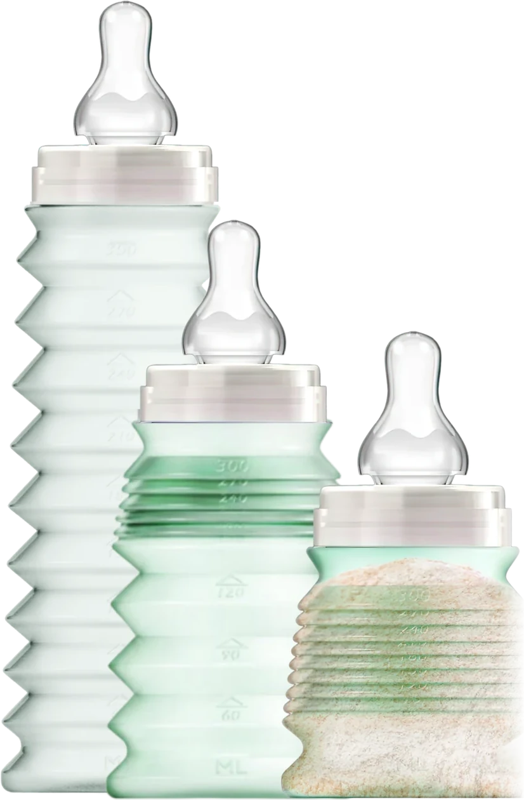
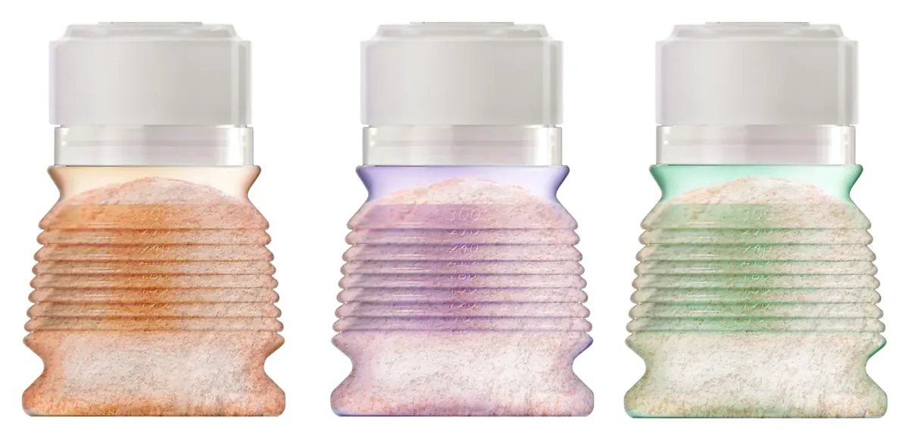
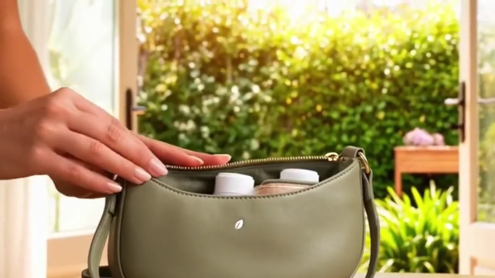

Fabriqué en France · Testé par le LNE
Le biberon nomade pliable.
Profitez du moment. Préparez ici, nourrissez partout.
Avant de sortir, vous placez la dose de lait en poudre dans le biberon replié. Au moment du repas, vous dépliez, vous ajoutez l’eau. C’est prêt.
50 % végétal
Testé par le LNE
0 résidu dans le lait
Fabriqué en France
Sans BPA
330 ml


Essayez le geste
Un soufflet,
une graduation.
La graduation n’est pas seulement imprimée : elle est dans la forme. La base, qui ne se plie pas, contient déjà 30 ml. Chaque soufflet déplié en ajoute 30, jusqu’à 300.
Besoin de 90 ml ? Deux soufflets. De 210 ml ? Six. Un dosage lisible à trois heures du matin, sans lunettes.
Faites glisser le curseur pour déplier le biberon.
150 ml
4 soufflets dépliés
replié · 30 mldéplié · 300 ml
L’encombrement
Une journée de shopping
ou de balade.
Trois repas, un sac à main. Trois biberons pliables déjà dosés occupent la place d’un seul biberon rigide — et l’heure du retour ne dépend plus du biberon.


Comment ça marche ?
Trois gestes, et rien de plus.
BIBEON est vendu vide. Le lait en poudre et l’eau ne sont pas fournis.

1
Dosez
Avant de sortir, versez vos doses de lait en poudre dans le biberon totalement replié, puis refermez : la poudre reste à l’abri de l’air. Jusqu’à 8 doses tiennent à l’intérieur, de quoi couvrir les plus gros appétits. Mode d’emploi fourni avec le biberon.

2
Dépliez
Au moment du repas, dépliez le corps à soufflets : le biberon retrouve toute sa contenance de 330 ml.

3
Ajoutez l’eau
Ajoutez l’eau, secouez, et le biberon est prêt. Plus de boîte doseuse à transporter à côté.
Bonus
L’anti-air
Un biberon rigide garde le même volume du début à la fin : à mesure que le lait descend, l’air prend sa place. Le corps à soufflets, lui, se replie doucement sur le liquide pendant la tétée. C’est le seul avantage de BIBEON qu’un biberon classique ne peut pas copier sans changer de forme.
En vrai, dans la vraie vie
Replié, il tient
dans un sac à main.
Pas de sac à langer à sortir pour une course d’une heure. Trois biberons préparés se glissent là où un seul biberon rigide ne rentrait pas.
Et pas de boîte doseuse à emporter à côté : le lait en poudre est déjà à l’intérieur, dosé chez vous. C’est un objet de moins dans le sac, et un geste de moins à faire dehors.
C’est ce que tout le reste du site raconte : vous préparez chez vous, vous partez léger.
Trois biberons déjà dosés, rangés dans un sac à main.
Le film
Le biberon en main,
du dosage au repas.
Une minute pour voir ce qu’aucun texte ne montre vraiment : la poudre versée dans le biberon replié, les soufflets qu’on déplie en commençant par le bas, l’eau ajoutée par-dessus, la tétine remise en place.
Vous verrez aussi le geste dont personne ne parle : le biberon qu’on abaisse doucement pendant que bébé boit, pour chasser l’air.
Nos garanties
Ce que nous pouvons prouver.
Des éléments factuels, tenus à disposition.
50 %
Matière végétale
La bague et le capuchon sont en matière d’origine végétale. C’est précisément ce qui les rend compostables.
LNE
Testé et contrôlé
Le biberon a été testé par le Laboratoire national de métrologie et d’essais. Dossier de conformité disponible sur demande.
0
Résidu de migration
Aucune substance de migration chimique du plastique n’a été détectée dans le lait lors des essais.
FR
Fabriqué en France
Conçu et fabriqué en région lyonnaise, du moule au flacon. Une production locale, dans un secteur où elle est devenue rare.
Silicone
Tétine alimentaire
La tétine fournie est en silicone alimentaire, une matière destinée au contact avec les aliments.

Notre engagement
Plus de liberté,
plus de moments ensemble.
BIBEON est né d’une idée simple : alléger les sorties avec bébé. Le repas ne devrait pas décider de l’heure du retour, ni du volume du sac.
Un biberon qui se prépare à l’avance et se replie, c’est une contrainte de moins entre vous et le moment que vous étiez venus vivre.
Découvrir son fonctionnementLes coloris
Une palette douce,
un biberon par enfant.

Notre boutique
Les essentiels BIBEON.
La boutique ouvre bientôt. En attendant, appelez-nous : les commandes se prennent de vive voix.

Un biberon
Le biberon nomade, préparé par vous. Avec sa tétine en silicone alimentaire, débit 6 mois. Vendu vide.
29 €port comprisNous contacter

Le duo
Deux biberons : celui de la sortie, et celui qui reste prêt dans le sac.
48 €soit 24 € l’unité, port comprisNous contacter

Le lot de trois
Trois repas préparés d’avance : la journée entière tient dans le sac à main.
60 €soit 20 € l’unité, port comprisNous contacter
330 ml une fois déplié
Gradué jusqu’à 300 ml, par paliers de 30
9 soufflets au-dessus d’une base fixe
Tétine débit 6 mois fournie
Dès 6 mois, jusqu’à 3 ans
Vendu vide — lait et eau non inclus
Paiement sécurisé
- VISA
- PayPal
- Apple Pay
Prix port compris, expédition depuis la France. Retour sous 14 jours.
Voyager avec bébé
Un biberon pour tous les départs.
En avion, en voiture, à la plage ou au camping, la difficulté est toujours la même : le repas de bébé décide de l’heure du retour et du volume du sac. BIBEON se prépare avant de partir et se replie quand il est vide.

Biberon en avion
Replié, il se glisse dans le bagage cabine. Le lait en poudre voyage à sec : l’eau s’ajoute après les contrôles, une fois côté embarquement.
Biberon en voiture et sur l’autoroute
Trois biberons déjà dosés dans la boîte à gants ou le sac à main. À l’aire d’autoroute, on déplie, on ajoute l’eau, et on repart.
Biberon en train
Pas de boîte doseuse à ouvrir sur une tablette étroite. Le dosage est fait depuis la maison, il ne reste qu’un geste à faire.
Biberon à la plage
Le sac de plage est déjà plein. Un biberon replié prend la place d’un tube de crème solaire, et le sable ne rentre pas dans une boîte doseuse restée à la maison.
Biberon en camping et en van
Peu de place, peu de vaisselle. Le biberon se replie une fois vide et se nettoie au goupillon fourni.
Randonnée, parc, poussette
Une sortie d’une heure ne devrait pas exiger un sac à langer complet. Le repas tient dans une poche.
Restaurant, musée, salle d’attente
Vous demandez de l’eau, vous dépliez, c’est prêt. Rien à étaler sur la table.
Chez la nounou, chez les grands-parents
Un biberon par enfant, un coloris par enfant, et la dose du jour déjà dedans.
Questions fréquentes
Ce que les parents nous demandent.
Comment emporter un biberon en voyage sans encombrer le sac ?
BIBEON se replie à la taille d’un petit pot : replié, il tient dans une poche de sac à main. Vous y placez les doses de lait en poudre avant de partir, vous le dépliez au moment du repas et vous ajoutez l’eau. Plus de boîte doseuse à transporter à côté, et plus de sac à langer à sortir pour une course d’une heure.
Peut-on l’emporter en avion, en bagage cabine ?
Oui. Replié et vide, il prend la place d’un petit étui. Le lait en poudre voyage à sec à l’intérieur et l’eau s’ajoute après les contrôles, ce qui évite la question des liquides en cabine. Les règles applicables aux aliments pour bébé varient selon les aéroports et les compagnies : renseignez-vous avant le départ.
Combien de doses de lait en poudre tiennent à l’intérieur ?
Jusqu’à 8 doses, dans le biberon totalement replié. C’est d’ailleurs la seule bonne position pour doser : la poudre reste à l’abri de l’air.
Quelle est la contenance exacte ?
330 ml une fois entièrement déplié. Le corps est gradué jusqu’à 300 ml par paliers de 30 ml — un soufflet, une graduation — et la base, qui ne se plie pas, contient déjà 30 ml.
À partir de quel âge ?
La tétine en silicone fournie est à débit « 6 mois ». BIBEON accompagne les bébés de la diversification jusqu’à environ 3 ans.
Comment le nettoyer en déplacement ?
Au goupillon fourni, à l’eau chaude savonneuse, puis rinçage. Le lave-vaisselle est interdit. Pour la stérilisation, seules deux méthodes conviennent : les pastilles de stérilisation à froid, ou une méthode au micro-ondes. Jamais d’ébullition. Pour réchauffer au micro-ondes, au bain-marie ou au chauffe-biberon, retirez toujours la bague et le capuchon.
Est-il sans aucun bisphénol ? A-t-il été testé ?
Il est sans aucun bisphénol et a été testé par le LNE, le Laboratoire national de métrologie et d’essais : aucune substance de migration chimique du plastique n’a été détectée dans le lait lors des essais. Le dossier de conformité est disponible sur demande.
Où est-il fabriqué ?
En France, en région lyonnaise, du moule au flacon. La bague et le capuchon sont en matière végétale, ce qui les rend compostables.
Ce que les autres ne font pas
Cinq différences,
et aucune n’est un détail.
Il existe de très bons biberons. Aucun ne réunit ces cinq points.
01
Nomade, vraiment
Nomade veut dire quatre choses à la fois. Peu encombrant : replié, il tient dans une poche. Léger : moins de 30 grammes à vide. Sans boîte doseuse : le lait en poudre voyage dans le biberon, dosé chez vous — c’est un objet de moins dans le sac, et un geste de moins dehors. Et gain de place : trois biberons prêts occupent le volume d’un seul biberon rigide, vide.
02
Végétal, et zéro résidu mesuré
La bague et le capuchon sont en matière d’origine végétale, ce qui les rend compostables. Et surtout : le Laboratoire national de métrologie et d’essais a cherché des substances de migration dans le lait. Il n’en a trouvé aucune.
Le flacon, lui, est en polypropylène : une matière qui ne contient aucun bisphénol — sa fabrication n’en emploie pas — et qui se plie sans le moindre assouplissant ajouté. Elle a un défaut, son aspect laiteux. Nous l’avons préférée à un plastique plus joli qu’il aurait fallu attendrir chimiquement. Pourquoi ce choix.
La nuance est de taille. Un nom de matière annonce ce qu’un matériau est censé être. Un rapport de migration dit ce qui est réellement passé dans le lait. Nous avons fait tester le biberon fini, pas la matière première. Lire le détail des mesures.
03
Zéro air à l’intérieur
C’est la conséquence directe du pliage, et personne d’autre ne peut l’offrir. Une fois replié sur la dose de lait en poudre, le biberon ne contient aucun volume d’air résiduel : les parois viennent au contact de la poudre. La tétine, repliée sur elle-même, voit son orifice obturé par le capuchon enfoncé bien à la verticale dans sa base.
Résultat : rien n’entre, rien ne sort. Pas d’air, pas d’humidité, et aucune fuite pendant les déplacements — même au fond d’un sac.
04
Moins de 30 grammes à vide
Le poids d’une lettre. C’est ce qui change tout dans un sac déjà plein — et ce qui permet à un bébé de le porter jusqu’à sa bouche sans que le poids ne décide à sa place.
05
Fait pour des mains de bébé
Le corps à soufflets se resserre là où les doigts se posent. Un enfant de six mois l’attrape, le tient, le repose. Les parents qui l’ont testé le disent avant tout le reste : leur bébé le prend tout seul.
Les avis des parents
65 familles l’ont testé.
BIBEON a été soumis aux mères testeuses de ConsoBaby&Kid, premier site français d’avis de parents. Les avis y sont vérifiés et publiés sans que nous puissions les modifier.
4,4/ 5
sur 65 avis vérifiés
- Qualité4,5
- Attrait pour bébé4,5
- Praticité et hygiène4,2
- Prix4,2
Ce qui revient le plus souvent
- La matière végétale et l’absence de résidus, citées comme la première raison d’adopter le biberon.
- Le format nomade : les parents le décrivent comme le biberon des sorties, du sac à main et des voyages.
- La légèreté, y compris pour les petites mains de bébé.
- Les coloris, souvent jugés attirants par les enfants eux-mêmes.
- Le rapport de non-migration du LNE, cité comme un élément rassurant.
Ce que les parents nous demandent d’améliorer
- 10 avis sur 65 — le nettoyage : de l’eau reste entre les soufflets, le séchage demande de l’attention.
- 8 avis sur 65 — le dépliage, qui réclame un peu d’habitude les premières fois.
- 5 avis sur 65 — la tétine : ces parents souhaiteraient d’autres débits selon l’âge.
- 4 avis sur 65 — le goulot, jugé étroit au moment de verser la dose de poudre.
- 3 avis sur 65 — le prix, jugé élevé. Le biberon était alors vendu 35 € l’unité ; il est aujourd’hui à 29 €, port compris.
Nous publions ces retours tels quels, avec leur nombre. Ce sont eux qui guident la suite : le mode d’emploi vidéo de ce site répond aux deux premiers points.
L’esprit BIBEON
Au fur et à mesure que bébé boit, on abaisse le biberon : l’air sort, et il n’en reste plus à avaler.
C’est l’air avalé pendant la tétée que l’on met en cause dans les coliques du nourrisson. Un biberon qui se replie sur le liquide en laisse moins entrer.

Parlons-en de vive voix.
Une question sur le produit, une demande de revendeur, une commande en volume : appelez, on répond.